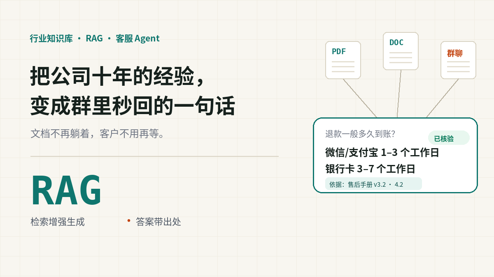
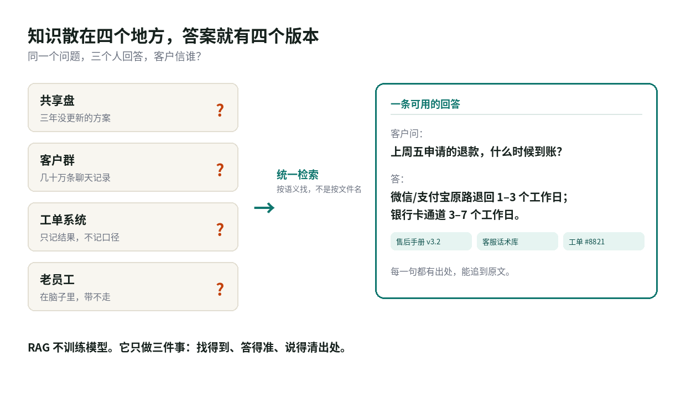
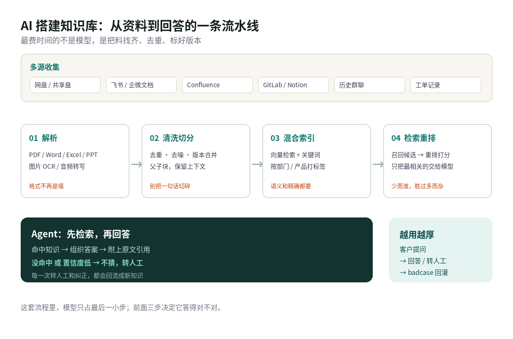
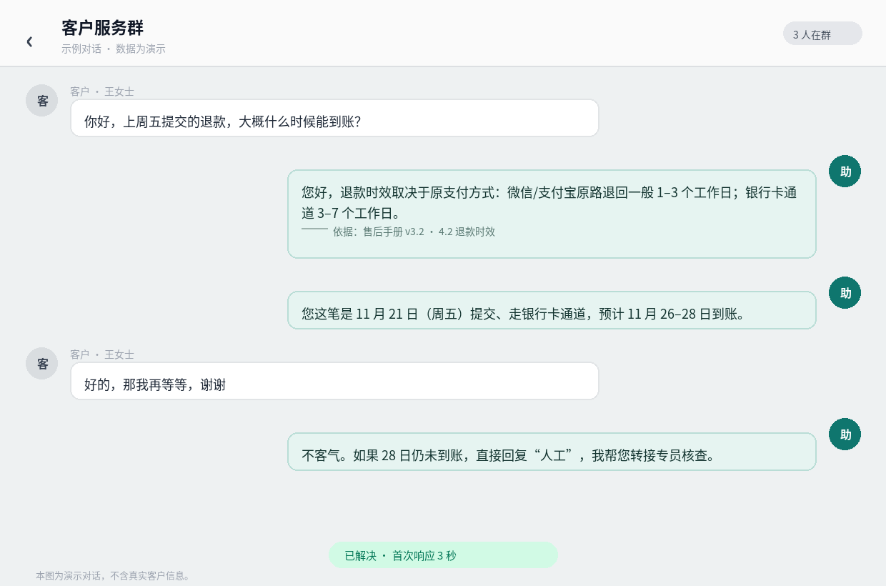
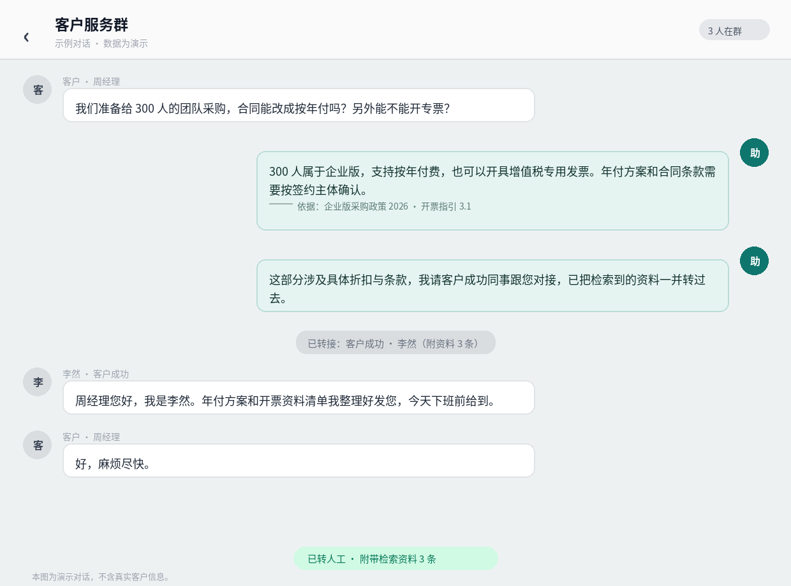

前阵子在一个客户服务群里看到一幕。
客户问："上周五申请的退款，什么时候到账？"群里三个人先后回复。一个说三个工作日，一个说七个工作日，还有一个让客户"再等等，我查一下"。三个人都没说错，但客户懵了。
这不是服务态度问题。是同一家公司，对同一个问题，没有统一的答案出口。
这几年很多企业开始做"知识库"。买系统、传文档、建目录，忙了两个月，最后变成一个更大的网盘——东西都在里面，但没人用。真正被问到时，大家还是去群里喊人。
问题不在存，在取。

把沉淀的知识，变成客户群里那句"马上能用"的回答
— 01 —
企业缺的不是文档，是"能用的知识"
大部分公司的知识，其实散在四个地方：共享盘里的方案、客户群里的对话、工单系统里的处理记录、以及老员工脑子里那套"遇到这种情况就怎么办"。
共享盘的问题是找不到。文件名靠猜，版本靠缘分，搜关键词搜出来的往往是三年前的旧方案。群聊的问题是翻不动。几十万条消息，真出问题时没人愿意往上翻。工单只记录结果，不记录口径。老员工最靠谱，但带不走、也复制不了。

RAG 把散落的资料变成一条可引用、可追溯的回答
RAG 做的事，说白了就三步：先把资料切成能被检索的小块，再根据用户的问题找出最相关的几块，最后让模型只看着这几块材料组织答案，并把出处标出来。
它不训练模型，也不改模型。文档更新了，重新索引一下就行，不用重训。这一点对企业很关键——业务口径一个月变三次，没有哪个团队等得起一次模型微调。
RAG 的价值不在"能回答"，在"回答有依据、能追责"。客户收到的每句话后面都能点开原文，客服主管能查到这句话是从哪份文档的哪一节来的。这比"AI 很聪明"重要得多。
当然它也有边界。需要复杂计算、实时交易、跨部门强推理的问题，硬套 RAG 效果不会好。它擅长的是"公司内部已经写过、只是没人找得到"的那类知识。认清这一点，能省掉很多冤枉钱。
— 02 —
为什么这两年才真的能用
RAG 这个概念不新，早几年做不动的核心原因有三个，现在都被补上了。
第一是解析。企业资料不是干净的纯文本。扫描版 PDF、带合并单元格的 Excel、PPT 里的图、微信群里的截图、会议录音——过去这些都要人工整理，现在开源方案基本能自动处理，连图片里的字和音频里的内容都能转成可检索的文本。
第二是检索。只用向量搜，遇到产品型号、合同编号这种精确词会翻车；只用关键词，换个说法就找不到。现在普遍是混合检索：向量负责"意思相近"，关键词负责"一字不差"，再叠一层重排把最相关的顶上来。
第三是生成。模型被要求"依据给定材料回答"，并且要标引用。幻觉没有被消灭，但被限制在一个可以核对的范围内——它说了什么，你能立刻翻到原文去验。
近两年开源社区已经把这条链路做成了可以部署的工程：多格式解析、混合检索、父子块切分、引用溯源、权限隔离、IM 接入、调用链追踪。你不用再从零拼装，重点可以放在自己的数据和业务上。
— 03 —
用 AI 搭：先把"料"收进来
过去搭知识库，最痛苦的一步是入库。要写脚本、调接口、处理格式、手动切片，一个 PDF 解析失败就能卡半天。现在的开源知识库框架基本把这段做成了"上传即处理"。
能接的来源比想象中多：共享盘、在线文档、Confluence、GitLab、Notion、语雀、飞书、甚至 RSS。支持 PDF、Word、Excel、PPT、图片、XMind、音频。整目录上传会保留层级，配置好之后还能定时同步，文档改了知识库跟着更新。
一个下午能把几百份核心资料灌进去，这在两年前是不可想象的。

从多源收集到带引用回答：模型只占最后一小步
但我得泼一盆冷水：上传不等于建好。真正决定效果的是后面几件脏活——同一份制度有五个版本，该留哪个；三年前的报价单还在索引里，客户一问就报错价；市场部能看的资料，客服不该看到。
所以我的建议是，AI 负责"搬"和"切"，人负责"选"和"删"。每周花半小时清一次过期内容，比换一个更大的模型有用。
AI 把入库从几周压到几天，但"哪些该进、哪些该删"，仍然要人拍板。
— 04 —
客户群，是被浪费的知识金矿
大部分知识库项目会漏掉一个最有价值的来源：客户群的聊天记录。
文档写的是"我们希望怎么描述"，群聊里才是"客户到底怎么问、我们实际怎么答"。客户不会用你的术语。他会说"我这个钱什么时候退回来"，而不是"退款到账时效是多久"。这些真实问法，是检索效果的关键。
具体怎么做，我见过跑得比较顺的团队是这么走的：
第一步，导入历史对话。按业务线分组，先脱敏，再入库。
第二步，让模型聚类高频问题。把几万条对话压成几十个问题簇，每个簇附上原话和出现频次。
第三步，生成 FAQ 草稿。要求每条答案必须引用具体的原对话或文档，不许自由发挥。
第四步，人工审核后回灌。客服主管改完口径，再作为正式知识入库。
脱敏这一步不能省。手机号、订单号、身份证、客户姓名，全部要打码；导入范围要经过业务负责人确认；员工要被告知对话会用于内部知识建设。合规不是给法务看的，是让这件事能长期做下去的前提。
最好的知识库不是写出来的，是从真实对话里长出来的。文档定框架，群聊补血肉，两边合起来，才是一套能直接用的口径。
— 05 —
Agent 进群：带着依据回答
知识库建好之后，下一步是让它"开口"。现在常见的做法是把 Agent 接进客户群，让它先接第一轮。
但"自动回复"这个词容易误导。真正可用的模式有三种，风险从低到高：
草稿模式：Agent 检索并生成答案，但不直接发，推给人工确认。
自动模式：低风险、高置信度的问题直接答，附引用。
转人工：高风险、低置信度、涉及报价合同的，交给人，并把手头检索到的资料一并转过去。
下面这段对话是演示数据，但每一句回复都按真实上线的逻辑来写——包括引用来源和兜底话术。

示例对话（演示数据）：一个常规退款问题被直接解决
这条回复之所以让人放心，不是因为语气客气，而是它做对了五件事：先给结论，再分情况（微信/支付宝 vs 银行卡），给出时间锚点（11 月 21 日提交），标出依据（售后手册 4.2），最后留了升级路径（回复"人工"）。
对照一下开头那三个客服的回答：都对，但都没给全。Agent 的优势不是比人聪明，是它每次都能把同一套完整口径稳定地说出来。
客户要的不是"机器人"，是"马上有人管"。是不是 AI 在回，客户其实没那么在意。
— 06 —
更重要的是：知道什么时候不该答
上一段是顺利的情况。真实业务里，大量问题 Agent 不该碰：非标报价、合同条款、投诉升级、涉及赔付的承诺。这些一旦答错，省下的三分钟要用三个月去补。

示例对话（演示数据）：识别出高风险问题，转人工并附上检索资料
注意这条转接消息：它不是甩一句"稍等，我转同事"，而是把"已检索到的 3 条资料"一起交接。客户不用再讲一遍，人工也不用从零查起。这是 Agent 和普通自动回复机器人最大的区别——它做了准备工作，只是不做最终决定。
工程上要配好几道开关：置信度阈值（低于多少必须转人工）、意图识别（哪些意图直接禁答）、权限过滤（不同等级客户看到的价格表不同）、敏感词与承诺类话术拦截、人工接管（人一发言，Agent 立刻闭嘴）、会话归属（转接后不能两个都在答）。
好的客服 Agent 不是"什么都能答"，是"知道自己什么时候不该答"。这条线划得越清楚，团队越敢把它放进真实的客户群。
— 07 —
准确率，是"管"出来的
很多团队上线第一周就发现：演示时很惊艳，真实问题一来就露怯。原因通常不在模型，在下面三道闸没做好。
第一道，检索层。混合检索打底，重排模型收口；用父子块保住上下文，别把一句关键限定条件切丢；给文档打上部门、产品、版本标签，检索时先按标签过滤。很多"答错"，其实是检索到了另一条产品线的资料。
第二道，生成层。只允许基于检索片段作答；强制每条结论带引用；没找到就明确说"知识库里没有"，而不是编一个像样的答案；把温度调低，减少自由发挥。
第三道，运营层。准备一套 50–100 条的真实问题测试集，每周跑一次；抽检线上回答；把答错的 case 标出来，回溯是检索错、切分错还是文档本身错了；改完再跑同一套测试集，确认没有把别的场景改坏。
还有一件容易被忽略的事：可观测。每次回答都要能查到命中了哪些片段、用了哪个模型、耗时多少。出了问题能回放，才谈得上优化。没有这一步，所谓"调优"就是盲猜。
验收别只看"回答像不像"。看四个数：一次解决率、转人工率、引用准确率、平均首次响应时长。前两个衡量有没有用，后两个衡量敢不敢用。
准确率不是一次调参调出来的，是每周复盘攒出来的。
— 08 —
落地路线：四周，从一个小场景开始
不要一上来就做"全公司知识大脑"。那种项目通常死在第三个月。更靠谱的节奏是这样：
第一周，选题。挑一个高频、低风险、答案稳定的场景，比如产品参数、售后政策、开票流程。别碰报价和合同。
第二周，收料。50–100 份核心文档，加上 1000 条历史问答；同时整理 50 条测试问题，写上标准答案和出处。
第三周，草稿模式。Agent 只生成不发送，人工确认；把所有答错、答偏、该转没转的 case 记下来。
第四周，小流量自动。只放开低风险意图，其余全部转人工；盯一周数据，再决定扩不扩。
三条红线，建议写进项目章程：不使用未授权的数据；不自动回答敏感业务（价格、合同、医疗、法律）；不追求 100% 自动，转人工率高不是失败，答错才是。
最后说适合谁。客户咨询量大、问题重复度高、有大量历史对话和文档的团队，收益最明显——电商售后、SaaS 客服、教育培训、连锁门店都算。如果一天只有十几个咨询，或者业务口径每周大变，先别急着上，维护知识库的成本可能高于收益。
知识库的上限，不是模型有多聪明。
是你愿不愿意把老师傅脑子里的东西，一条条写下来。
AI 能帮你解析、切分、检索、组织语言，甚至能替你先接住客户的第一句话。但它替不了那个决定"哪个版本才算数"的人。
所以这件事真正的起点，不是选一个多强的模型，而是把群里那句"这个我也不太确定，我问问"，变成一份能被检索到的标准答案。
说明
文中两段客户群对话均为演示数据，不含真实客户信息，仅用于说明应答与转接机制。
知识库能力描述参考公开开源 RAG 框架的通用设计，不涉及任何厂商商标、标识或官方背书。
上线前请按所在行业要求完成数据授权、脱敏与合规评估。